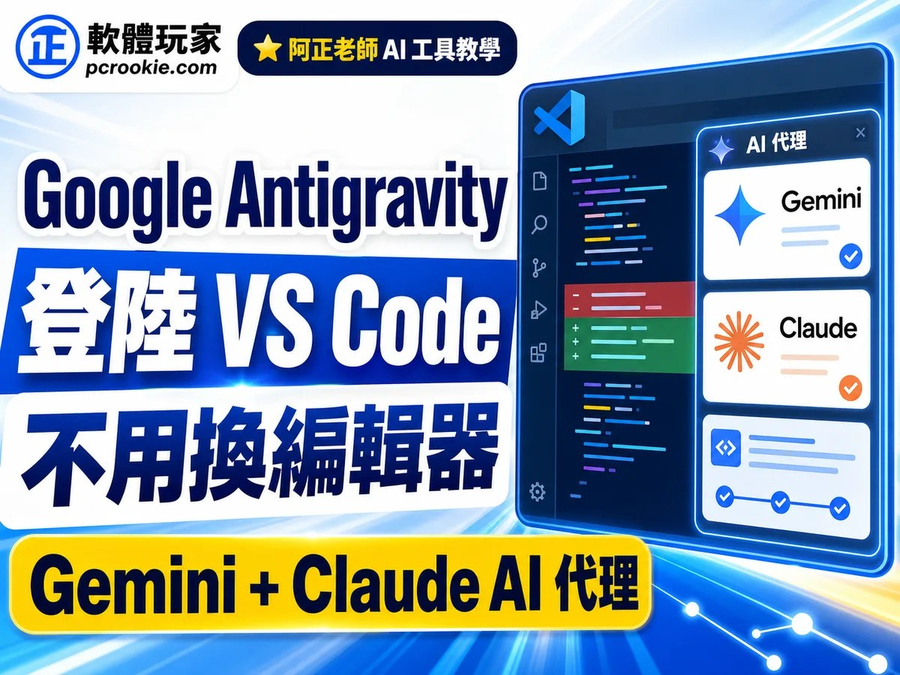

Threads｜軟體玩家：Google Antigravity 登陸 VS Code，官方延伸模組把 AI Agent 帶回原本編輯器

一句話摘要
Google 已把 Antigravity 做成官方 VS Code 延伸模組；對已經住在 VS Code 的開發者來說，重點不是再換一套 IDE，而是把 Gemini、Claude、subagents、inline diff、MCP 與用量檢視帶進原本工作環境。
來源脈絡
- Threads 作者：軟體玩家（@software.player）。
- Threads 原文指出：Antigravity 現在可作為 VS Code 官方延伸模組使用，保留原本設定與套件，並可使用 Gemini 與 Claude 模型的 AI 代理。
- 轉貼文章：軟體玩家〈Google Antigravity 登陸 VS Code！官方延伸模組安裝教學，不用換編輯器就能用 Gemini 3.7 與 Claude 4.6 免費 AI 代理〉。
- 官方文件：Google Antigravity Docs 的 Visual Studio Code 頁面確認「Antigravity for Visual Studio Code extension brings the full agentic capabilities of Google Antigravity into VS Code」。
- Marketplace：Visual Studio Marketplace 顯示發行者為 Google／google.com，並定位為「Bring Google's agent-first development platform to Visual Studio Code」。
這次更新解決什麼痛點
Antigravity IDE 本身是以 VS Code 為基礎的獨立編輯器，但對已有 VS Code 環境的人來說，最大的摩擦在於：
- 佈景主題、快捷鍵、Git、Docker、資料庫與語言套件要重新配置。
- 專案與工作流可能被迫在兩套幾乎相同的編輯器間切換。
- 若只想要 agentic coding 能力，整套搬家成本過高。
VS Code 延伸模組版的價值，是把 Antigravity 放進原本編輯器，而不是要求開發者搬家。這會讓「先試用 AI Agent」的門檻大幅降低，也更適合教學、團隊導入與既有專案漸進式採用。
功能重點
根據軟體玩家文章與官方 Marketplace 說明，可保存的功能重點包括：
- 側邊欄對話：在 VS Code 內與 agent 互動，不必切到另一套 IDE。
- 多步驟工程任務：Antigravity 可規劃並執行較長的 coding / refactor / 測試流程。
- inline diff / review changes：每段修改可在編輯器內逐步審查與接受。
- subagents：複雜任務可拆給隔離 context 的子代理處理。
- MCP：可透過 Model Context Protocol 連接資料庫與外部工具。
- 用量檢視：模型與方案額度以帳號內實際 UI 為準，不宜在二手文章中寫死固定數字。
官方驗證與保留態度
這篇值得收進 AI 學習雷達，但要用「產品導入觀察」而不是「額度保證」來保存：
- 已驗證：官方文件存在 Visual Studio Code 延伸模組頁，Marketplace 也有 Google 發行頁。
- 已驗證：官方定位是把 Antigravity 的 agent-first / agentic coding 能力帶入 VS Code。
- 需保留：可用模型、免費額度、各方案限制與區域可用性可能快速調整，應以 Google 帳號內的模型選單、/usage 或官方文件為準。
- 需保留：第三方文章提到的模型版本與免費可用範圍，適合當作導讀，不應當成長期穩定承諾。
對 AI 學習雷達的保存價值
這則消息的意義在於：AI coding 工具正在從「獨立 AI IDE」回流到「原本的開發環境」。對欒帥目前同時使用 Codex、Claude Code、Hermes subagents 與各種本機工具的工作流來說，Antigravity VS Code 延伸模組是一個值得觀察的方向：如果 agent 能留在既有 IDE、沿用原本外掛與專案設定，AI 導入會更像加裝工作層，而不是重新搬家。
原始連結
Threads：
https://www.threads.com/@software.player/post/DckffxGkg2v
軟體玩家文章：
https://pcrookie.com/google-antigravity-vscode-extension-guide/
Google 官方文件：
https://antigravity.google/docs/ide/extensions/vscode/
Visual Studio Marketplace：
https://marketplace.visualstudio.com/items?itemName=Google.google-antigravity